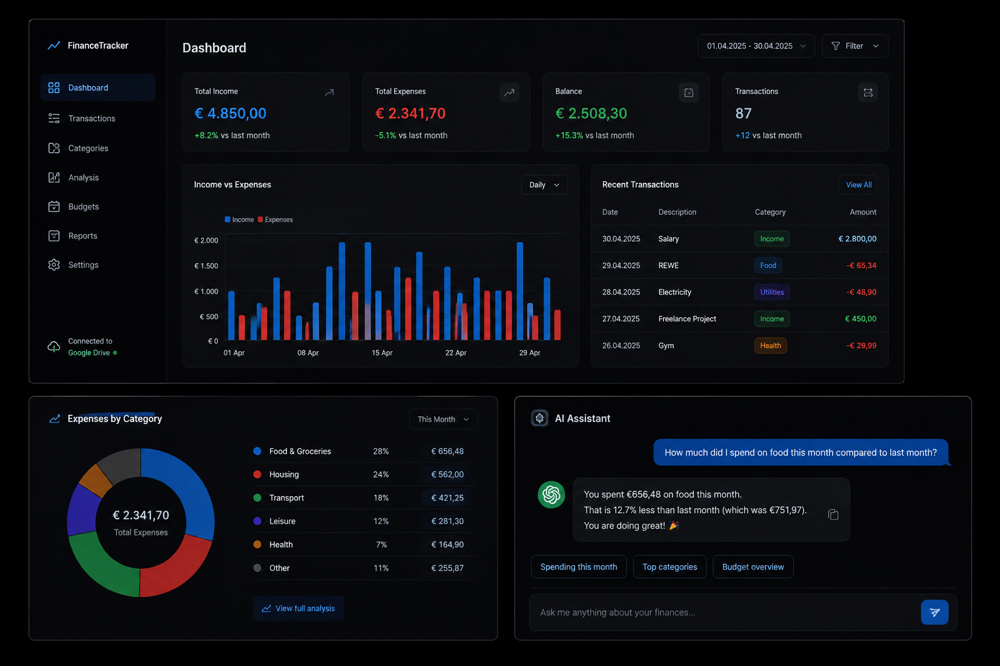

Stefan Tosic Portfolio
My name is Stefan Tosic (26) and this is my portfolio, where you can observe all my current projects and achievements.
read more
My name is Stefan Tosic (26) and this is my portfolio, where you can observe all my current projects and achievements.
read more01 Qualifications
Medical Image Processing
Mashine Learning
PYTHON
C
Matlab
Docker
Electrical Engineering
Labview/Altium Design
2025-
Test Engineer
Meon Medical Solution
2022-2025
Test Engineer - Intern
Infineon
Oct 2022 – Jan 2023
University Assistant
Technical University Graz
2018-2020
Summer Intern
Rohol
2018-2022
Bachelor of Science
Biomedical Engineering
2012-2018
Highschool
Scientific Branch
Jul 2015 – Aug 2015
Internship
Austrian Institute of Technology
A colection of projects I've worked on in the fields of biomedicall engineering software devellopment, hardware design and machine learning.
Finance Tracker is a Python-based financial management system designed for intelligent transaction tracking, categorization and visualization.
The application integrates the Google Drive API for cloud-based data synchronization and combines interactive dashboards with AI-assisted financial analysis using the ChatGPT API.

EOG offers important insights about eye movement patterns by observing the electrical potentials generated by the eye dipol. In order to measure these signals I developed a EOG sensor using the circuit from below. With a defined threshold a prosthetic finger can been moved just by eye movements.


Trained the CVAE onto the CelebA Dataset with 40 different attributes. Not all attributes where easy to reproduce.


IoT based system, combining different physiological sensors in combination with a single-board-comp
Hardware components of the sleep detection system:
(1) Custom respiratory belt
(2) ECG module
(3) Raspberry Pi 5
(4) PULOX po-250
(5) Lavelier microphone

In order to create a palmar grasp, one needs to stimulate specific muscles groups to get the wanted hand movement. Therefore, seven electrodes were systematically positioned until the best spot was discovered for each of them.

The goal of this project is to analyse the distinctive characteristics of perceiving voices of familiar and unfamiliar people, by decoding the EEG data. Below is the paradigm of the whole project.

The best single score was 76.5 % accuracy with an SVM for family vs teacher